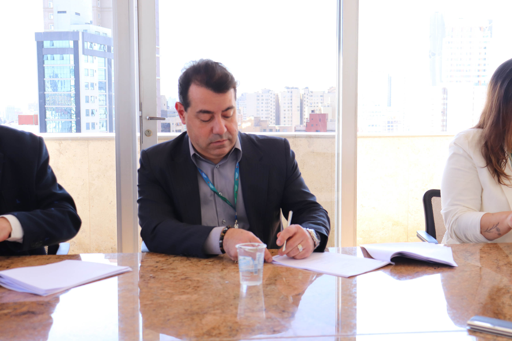

Objetivo é ampliar o corpo técnico da área de TI para auxiliar na execução de ações do Projeto de Modernização Fiscal do Paraná (Profisco II) e atividades pertinentes à Assessoria de Tecnologia da Informação e Comunicação.
A Secretaria da Fazenda, por meio da Assessoria de Tecnologia da Informação e Comunicação (Atic), contratou nesta terça-feira (25) três novos consultores individuais especialistas na área de Tecnologia da Informação. Eles vão atuar no desenvolvimento de sistemas e gestão do Projeto de Modernização Fiscal do Paraná (Profisco II)
O objetivo é ampliar o corpo técnico da área de TI para auxiliar na execução de projetos do Profisco II e atividades pertinentes à Assessoria de Tecnologia da Informação e Comunicação (Atic). O contrato terá vigência de 12 meses, podendo ser renovado. Os profissionais foram selecionados mediante prova de títulos de editais publicados no portal da Fazenda.
“A experiência que eu tive em trabalhar com projetos na área de segurança da informação me permitiu estar em contato com tecnologia de ponta. Com isso vou conseguir colaborar e trazer essa experiência de processos de governanças ao Estado”, destacou a nova consultora de TI, Gracyele Furbringer.
Para o consultor Pedro Ricardo Baptista de Miranda, essa ligação entre a necessidade de serviços informatizados com as equipes técnicas de tecnologia de informação é fundamental para facilitar e otimizar toda a cadeia de sistemas da Receita e Fazenda. Já o especialista em TI Carlo Costa Gallinea ressaltou que, com sua experiência, vai contribuir na área de consultoria de projetos de informação para o desenvolvimento sistemas de modernização fiscal. O novo consultor atuava até então na Secretaria de Finanças de Curitiba.
VAGAS ABERTAS - A Secretaria da Fazenda está também com inscrições abertas para a contratação de seis consultores individuais nas áreas de contabilidade, tecnologia da informação e finanças públicas. Os interessados podem se inscrever até as 18h do dia 15 de agosto.
O objetivo das contratações é fornecer auxílio na definição e implementação de uma metodologia de contabilidade de custos. Além disso, os consultores também participarão da implementação, gestão e execução dos projetos previstos no Sistema Único e Integrado de Execução Orçamentária, Administração Financeira, Contabilidade e Controle (SIAFIC).
